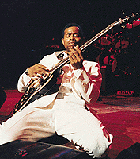

 |
LIL'ED WILLIAMS
and the BLUESIMPERIALS
(8 апреля 1955, Чикаго, Иллинойс)
ЛИЛ'ЭД Уилльямс - американский блюзовый гитарист, певец; мастер техники игры слайдом; продолжатель традиций баррел-хауз блюза.
|
Племянник Джи-Би Хьютто (J.B.Hutto), блюзового гитариста, известного именно великолепной слайдовой игрой, Эд Уиллиамс рос в окружении музыки, но игре на гитаре начал учиться относительно поздно, в 15-летнем возрасте. В 1975г. собрал группу "Блюз Империалз" ("Blues Imperials"). Состав группы неоднократно менялся, единственным постоянным ее участником остается брат Лил'Эда Уилльямса бас-гитарист Джеймс "Пууки" Янг (James "Pookie" Young). Энергичный блюз в чикагском стиле, заводной слайд в лучших традициях Джи-Би Хьютто и Элмора Джеймса (Elmore James) и Хаунддога Тейлор (Hound Dog Taylor) сразу открыли им сцены чикагских блюзовых клубов. Однако с коммерческой точки зрения середина 70-х была не лучшим временем для того, чтобы начать карьеру блюзового музыканта. В 1986г. Лил'Эд Уилльямс все еще днем работал мойщиком машин, для того, чтобы иметь возможность играть блюз вечером. Фирма "Alligator" предложила ему записать песню для альбома "Youngbloods", представлявшего новые имена на блюзовой сцене. За три часа отпущенного им студийного времени группа должна была записать две песни. Не имея ни малейшего студийного опыта, ЛилэЭд решил отнестись к записи как к обычному клубному концерту. И записал в один присест 30 песен - без дублей и переналожений! Основатель фирмы Брюс Иглауэр (Bruce Iglauer) был настолько поражен бурной энергетикой блюзбэнда, что тут же предложил им контракт на выпуск отдельного альбома, который и был составлен из записанного материала. Альбом стал блюзовой сенсацией: музыка в давних традициях чикагской клубной сцены зазвучала азартно и безыскусно молодо. Лил'Эд и "Блюз Империалз" с успехом выступали на крупнейших блюзовых фестивалях, гастролировали по США, Европе и Японии, принимал участие в юбилейном туре артистов фирмы "Эллигейтор". Однако Лил'Эд и в 1995г. распустил группу. На протяжении трех лет он лишь время от времени выступал на клубном уровне в дуэте с гитаристом Дейвом Уэлдом (Dave Weld), который участвовал еще в первом составе "Блюз Империалз". В этот период Лил'Эд записал два альбома: один с Дэйвом Уэлдом, другой - с ветераном чикагской сцены Уилли Кентом (Willie Kent). 1999г. отмечен его возвращением на сцену и записью нового альбома.
И заразительная слайдовая игра Лил'Эда, и его отношение к блюзу как к уникально-жизнелюбивой музыке - абсолютно необходимы для современной блюзовой сцене.
Дискография:
- Roughhousin' (Alligator CD, 1986)
- Chicken, Gravy & Biscuits (Alligator CD, 1989)
- What You See Is What You Get (Alligator CD, 1992)
- Gettin' Wild (Alligator CD, 1999)
Фотографии:
- Lil' Ed Williams & The Blues Imperials
Музыка:
- "Can't Let These Blues Go" - "Не расстанусь с этим блюзом", записано в 1992г. на юбилейном концерте "Аллигатора".
|